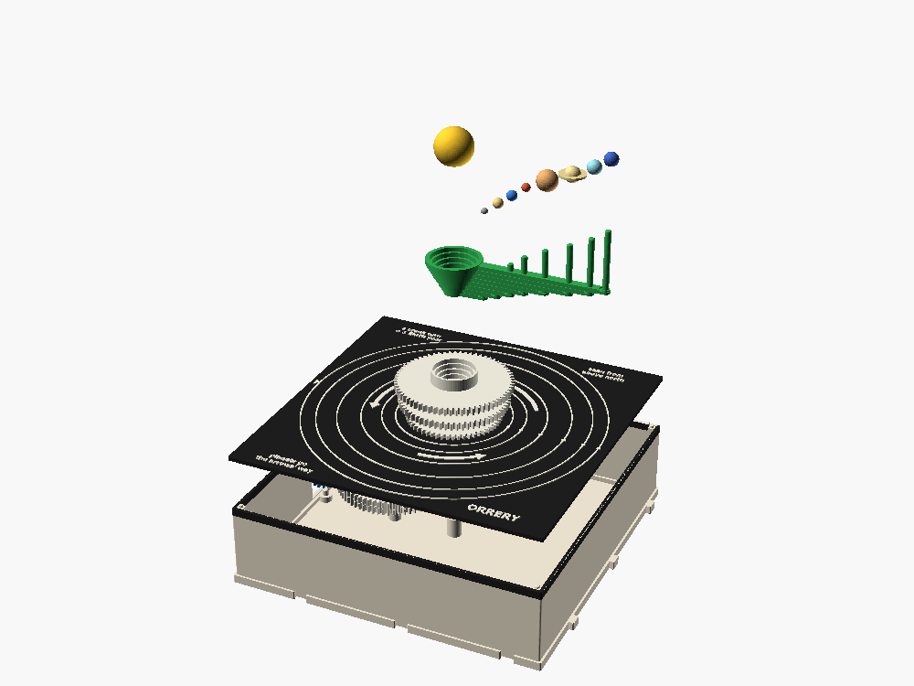
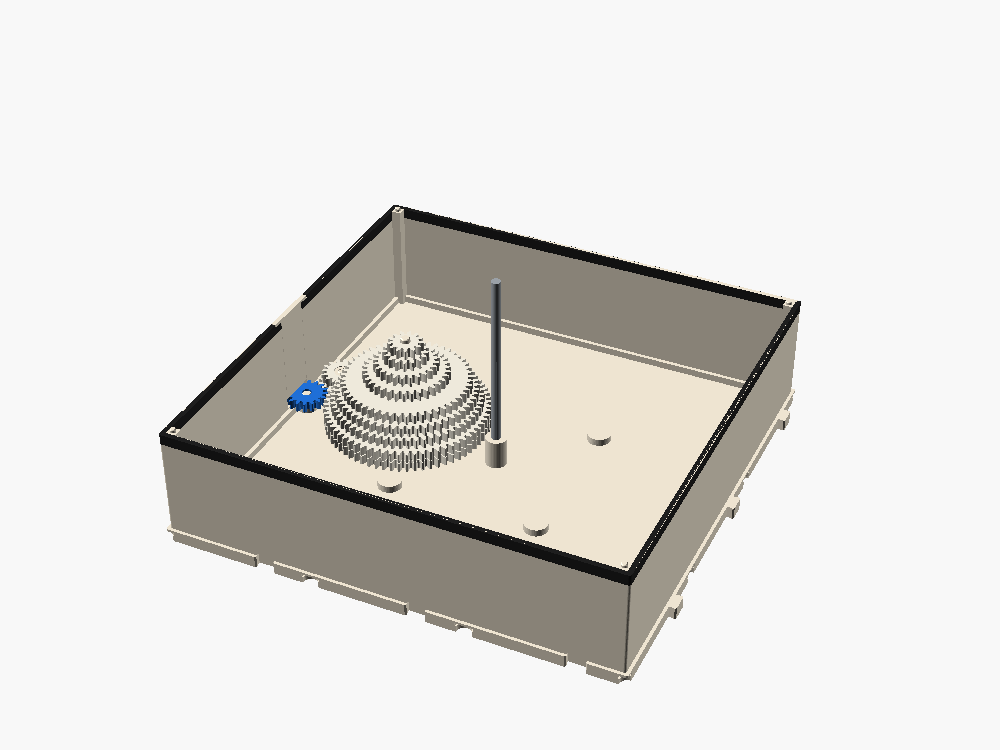

Orrery
Eight planets round the sun, each at its own speed, from one standard input port. Mercury whips round and Neptune creeps. It's not to scale in size, distance or time. It only shows how much faster the inner planets go.
Turn the crank
The planets start lined up on the east side. The positions come from the real gear ratios in the model. Change the cranking speed and only the pace changes. The pattern stays the same.
Assembled, exploded and inside



One layshaft, eight tubes, every pair adds up to 80
Each layer has one pair: a gear on the layshaft and a gear on a tube. All eight pairs add up to 80 teeth, so all eight sit on the same 40 mm center distance. That's what lets one shaft drive eight speeds. A small gear on a tube means a fast planet. The inner tubes are the thinnest and have room for the smallest gears, so Mercury ends up in the middle.
Why three by three
2 × 2 is too small. The layshaft's 67-tooth gear reaches 75 mm west of the sun, and a 128 mm box only has 61 mm inside.
4 × 4 can't be printed. It's 256 mm, the full P1S bed with nothing spare for the plinth.
3 × 3 is the biggest box that prints whole. Neptune's orbit is 89 mm, inside the 94.7 mm half-deck. The corners stay free for the deck notes.
All eight planets fit. Each planet costs one 4.4 mm layer of box depth and 1.45 mm of tube radius. Eight planets make the box 50 mm deep inside, against 26 for a standard box. Six planets would save 9 mm of depth, which isn't worth losing Uranus and Neptune.
Squashing 684 to 1 with a square root
Mercury really goes round 684 times for each Neptune orbit. One gear pair on a fixed center can only reach 67/13 against 13/67, about 26.6 to 1. √684 is 26.2, so the box shows the square root of every real speed. The order stays the same, and each planet keeps its place on a log scale, just squeezed to half.
The one wrong way
Forward input turns the W port clockwise (STANDARD.md). From W to X to the layshaft is two meshes, and from the layshaft to the tubes is a third. Three meshes means the planets turn counter-clockwise, the true way seen from above north.
Any drive turned the way its arrow says works, through any chain of forward-keeping boxes. One REVERSE box on the way flips it. Adding a second REVERSE fixes it, which makes a nice lesson in counting meshes.
- On the deck: three large counter-clockwise arrows, plus notes in the corners: "planets go the arrows' way", "seen from above north", "1 crank turn = 1 Earth year".
- Optional freewheel (later): split idler X and couple its two gears with SPIN's flexure pawls. Backwards just clicks and the planets stand still. I'd pick that over a locking ratchet, because a ratchet would make the crank fight a child's hand and strain every tooth on the way.
What it costs and what to print
- Cost 4 stages: W to X, X to the layshaft, the layshaft to the tubes, plus one stage for eight light meshes and the tubes rubbing on each other.
- The layshaft turns at a fifth of the port's speed, so the port feels a fifth of the tower's drag.
- It's an end box. A crank (budget 20) can be 16 stages of boxes away.
- Colors: standard roles, with one exception that's now decided: the sun and each planet print in their own colors. The arms stay display green. You could also print the deck in clear PETG and watch the gears.
- Shell 192 × 192 × 50 mm, deck, keeper, W port, X with cap, layshaft (9 gears in one print)
- 8 tubes: gear on the bed. Mercury's is 66 mm tall and 6.9 mm across.
- 8 arms: flat, with the peg up (10 to 34 mm tall)
- Planets and sun: Saturn prints in two halves, split at the ring.
- Bought: one 4 mm steel rod, 88 mm long. The rod's length sets the sun's height.
Checked so far, and what still needs checking
- Renders in OpenSCAD with no errors.
- Clash test clean (face contacts only) for the W port, X and the layshaft (checked at two angles), five of the tubes, three of the arms, Jupiter and Saturn with all the planets lined up, and all the fixed parts.
- X first rubbed the west wall with a 26-tooth gear. It's now 19/16.
- The keeper leg is 44 mm tall: try it, or switch to a short notch.
- Wobble and drag of the nested tubes at 0.25 mm clearance. Check Mercury's tall tube prints straight.
- Check that Neptune's 89 mm arm doesn't sag, and that the arm and rod press fits hold.
Fit-checked with the ten-layer override.